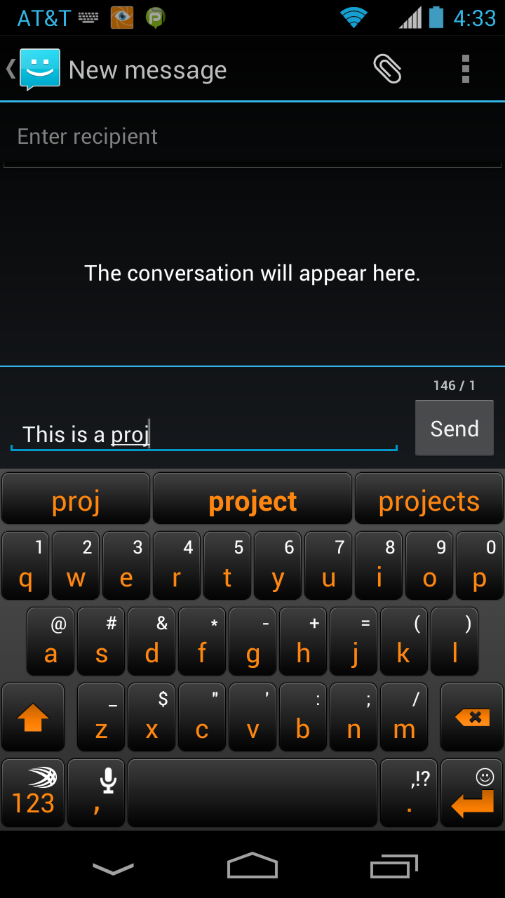
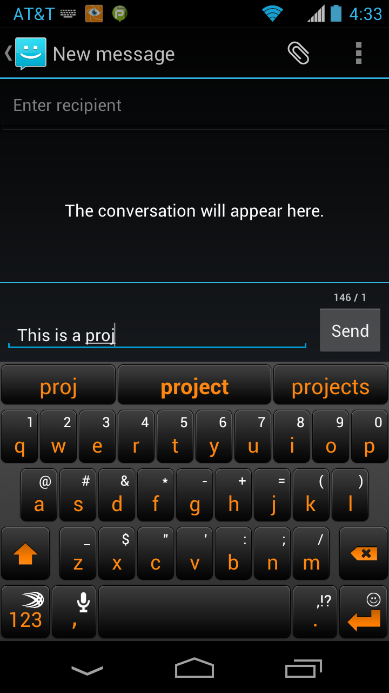
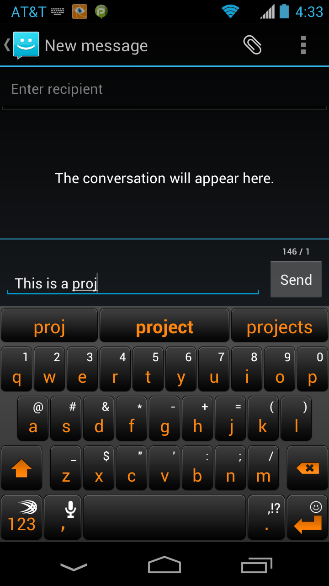
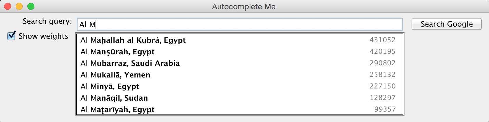

| COS 226 Autocomplete Me |
Programming Assignment checklist |
Write a program to implement autocomplete for a given set of n
terms, where a term is a query string and an associated non-negative weight.
That is, given a prefix, find all queries that start with the given prefix,
in descending order of weight.
Autocomplete is pervasive in modern applications. As the user types, the program predicts the complete query (typically a word or phrase) that the user intends to type. Autocomplete is most effective when there are a limited number of likely queries. For example, the Internet Movie Database uses it to display the names of movies as the user types; search engines use it to display suggestions as the user enters web search queries; cell phones use it to speed up text input.

In these examples, the application predicts how likely it is that the user is typing each query
and presents to the user a list of the top-matching queries, in descending order of weight.
These weights are determined by historical data, such as box office revenue for movies,
frequencies of search queries from other Google users, or the typing history of a cell phone user.
For the purposes of this assignment, you will have access to a set of
all possible queries and associated weights (and these queries and weights will not change).
The performance of autocomplete functionality is critical in many systems. For example, consider a search engine which runs an autocomplete application on a server farm. According to one study, the application has only about 50ms to return a list of suggestions for it to be useful to the user. Moreover, in principle, it must perform this computation for every keystroke typed into the search bar and for every user!
In this assignment, you will implement autocomplete by sorting the terms by query string; (using the sorts introduced in lecture) binary searching to find all query strings that start with a given prefix; and sorting the matching terms by weight.
Part 1: autocomplete term.
Write an immutable data type Term.java that
represents an autocomplete term—a query string and an associated integer weight.
You must implement the following API, which supports comparing terms by three different orders:
lexicographic order
by query string (the natural order);
in descending order by weight (an alternate order);
and lexicographic order
by query string but using only the first r characters (a family of alternate orderings).
The last order may seem a bit odd, but
you will use it in Part 3 to find all query strings that start with a given prefix (of length r).
public class Term implements Comparable<Term> {
// Initializes a term with the given query string and weight.
public Term(String query, long weight)
// Compares the two terms in descending order by weight.
public static Comparator<Term> byReverseWeightOrder()
// Compares the two terms in lexicographic order but using only the first r characters of each query.
public static Comparator<Term> byPrefixOrder(int r)
// Compares the two terms in lexicographic order by query.
public int compareTo(Term that)
// Returns a string representation of this term in the following format:
// the weight, followed by a tab, followed by the query.
public String toString()
// unit testing (required)
public static void main(String[] args)
}
Corner cases.
Throw java.lang.IllegalArgumentException in the constructor if
either query is null or weight is negative.
Throw a java.lang.IllegalArgumentException
in byPrefixOrder() if r is negative.
Unit testing.
Your main() method must call each public constructor
and method directly and help verify that they work as prescribed
(e.g., by printing results to standard output).
Performance requirements. The string comparison functions must take time proportional to the number of characters needed to resolve the comparison.
Part 2: binary search. When binary searching a sorted array that contains more than one key equal to the search key, the client may want to know the index of either the first or the last such key. Accordingly, implement the following API:
public class BinarySearchDeluxe { // Returns the index of the first key in a[] that equals the search key, or -1 if no such key. public static <Key> int firstIndexOf(Key[] a, Key key, Comparator<Key> comparator) // Returns the index of the last key in a[] that equals the search key, or -1 if no such key. public static <Key> int lastIndexOf(Key[] a, Key key, Comparator<Key> comparator) // unit testing (required) public static void main(String[] args) }
Corner cases.
Throw a java.lang.IllegalArgumentException if any argument to
either firstIndexOf() or lastIndexOf() is null.
Assume that the argument array is in sorted order
(with respect to the supplied comparator).
Unit testing.
Your main() method must call each public method directly and
help verify that they work as prescribed (e.g., by printing results to standard output).
Performance requirements.
The firstIndexOf() and lastIndexOf() methods must
make at most 1 + ⌈log2 n⌉ compares in the worst case,
where n is the length of the array.
In this context, a compare is one call to comparator.compare().
Part 3: autocomplete.
In this part, you will implement a data type that provides autocomplete functionality
for a given set of string and weights, using Term and BinarySearchDeluxe.
To do so, sort the terms in lexicographic order;
use binary search to find the all query strings that start with a given prefix;
and sort the matching terms in descending order by weight.
Organize your program by creating an immutable data type Autocomplete with the following
API:
public class Autocomplete { // Initializes the data structure from the given array of terms. public Autocomplete(Term[] terms) // Returns all terms that start with the given prefix, in descending order of weight. public Term[] allMatches(String prefix) // Returns the number of terms that start with the given prefix. public int numberOfMatches(String prefix) // unit testing (required) public static void main(String[] args) }
Corner cases.
Throw a java.lang.IllegalArgumentException in the constructor if either
its argument array is null or any entry is null.
Throw a java.lang.IllegalArgumentException in
allMatches() and numberOfMatches() if its argument is null.
Unit testing.
Your main() method call each public constructor
and method directly and help verify that they work as prescribed
(e.g., by printing results to standard output).
Performance requirements. The constructor must make proportional to
n log n compares (or better) in the worst case, where n
is the number of terms.
The allMatches() method must make proportional to
log n + m log m compares
(or better) in the worst case, where m is the number of matching terms.
The numberOfMatches() method must make proportional to
log n compares (or better) in the worst case.
In this context, a compare is one call to any of the compare() or compareTo()
methods defined in Term.
Input format. We provide a number of sample input files for testing. Each file consists of an integer n followed by n pairs of query strings and non-negative weights. There is one pair per line, with the weight and string separated by a tab. A weight can be any integer between 0 and 263 − 1. A query string can be any sequence of Unicode characters, including spaces (but not newlines).
Below is a sample client that takes the name of an input file and an integer k as command-line arguments. It reads the data from the file; then it repeatedly reads autocomplete queries from standard input, and prints the top k matching terms in descending order of weight.
% more wiktionary.txt 10000 5627187200 the 3395006400 of 2994418400 and 2595609600 to 1742063600 in 1176479700 i 1107331800 that 1007824500 was 879975500 his ... 392323 calves% more cities.txt 93827 14608512 Shanghai, China 13076300 Buenos Aires, Argentina 12691836 Mumbai, India 12294193 Mexico City, Distrito Federal, Mexico 11624219 Karachi, Pakistan 11174257 İstanbul, Turkey 10927986 Delhi, India 10444527 Manila, Philippines 10381222 Moscow, Russia ... 2 Al Khāniq, Yemen
public static void main(String[] args) {
// read in the terms from a file
String filename = args[0];
In in = new In(filename);
int n = in.readInt();
Term[] terms = new Term[n];
for (int i = 0; i < n; i++) {
long weight = in.readLong(); // read the next weight
in.readChar(); // scan past the tab
String query = in.readLine(); // read the next query
terms[i] = new Term(query, weight); // construct the term
}
// read in queries from standard input and print out the top k matching terms
int k = Integer.parseInt(args[1]);
Autocomplete autocomplete = new Autocomplete(terms);
while (StdIn.hasNextLine()) {
String prefix = StdIn.readLine();
Term[] results = autocomplete.allMatches(prefix);
StdOut.printf("%d matches\n", autocomplete.numberOfMatches(prefix));
for (int i = 0; i < Math.min(k, results.length); i++)
StdOut.println(results[i]);
}
}
Here are a few sample executions:
% java-algs4 Autocomplete wiktionary.txt 5 auto 2 matches 619695 automobile 424997 automatic comp 52 matches 13315900 company 7803980 complete 6038490 companion 5205030 completely 4481770 comply the 38 matches 5627187200 the 334039800 they 282026500 their 250991700 them 196120000 there% java-algs4 Autocomplete cities.txt 7 M 7211 matches 12691836 Mumbai, India 12294193 Mexico City, Distrito Federal, Mexico 10444527 Manila, Philippines 10381222 Moscow, Russia 3730206 Melbourne, Victoria, Australia 3268513 Montréal, Quebec, Canada 3255944 Madrid, Spain Al M 39 matches 431052 Al Maḩallah al Kubrá, Egypt 420195 Al Manşūrah, Egypt 290802 Al Mubarraz, Saudi Arabia 258132 Al Mukallā, Yemen 227150 Al Minyā, Egypt 128297 Al Manāqil, Sudan 99357 Al Maţarīyah, Egypt
Interactive GUI (optional, but fun and no extra work). Download and compile AutocompleteGUI.java. The program takes the name of a file and an integer k as command-line arguments and provides a GUI for the user to enter queries. It presents the top k matching terms in real time. When the user selects a term, the GUI opens up the results from a Google search for that term in a browser.
% java-algs4 AutocompleteGUI cities.txt 7
Deliverables.
Submit Autocomplete.java, BinarySearchDeluxe.java, and Term.java.
Do not call any library functions other than those in java.lang,
java.util, and algs4.jar.
Finally, submit a readme.txt
file and answer the questions.